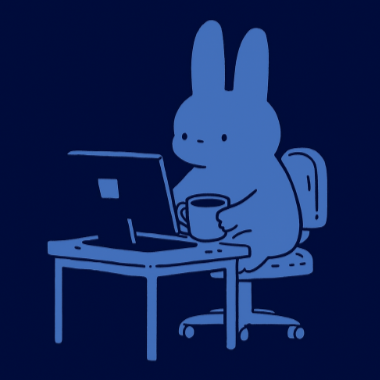
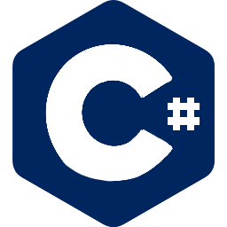
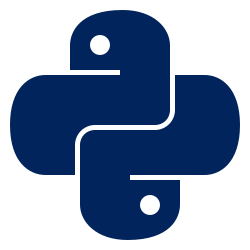
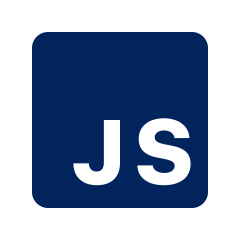
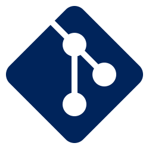
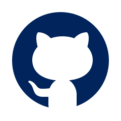
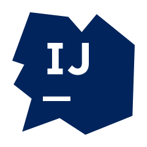

About Me

Education
✦ 2022 - 2025
Queensland University of Technology (QUT)
Bachelor of Information Technology
• Major: Computer Science
• Minor: Networks and Security
Languages
  
Hello there! Welcome to my personal website ♥︎
I recently graduated with a Bachelor of Information Technology in 2025. Since starting my degree in 2022, I’ve developed a passion for software development, web design, and creating practical, user-friendly solutions. My focus is on combining technical skills and creative design to solve problems and build functional, visually appealing digital experiences.
I’m always eager to collaborate, learn, and bring ideas to life. Explore my portfolio and, feel free to reach out!
Tools


